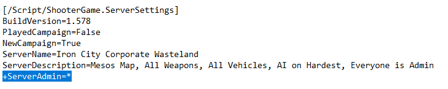
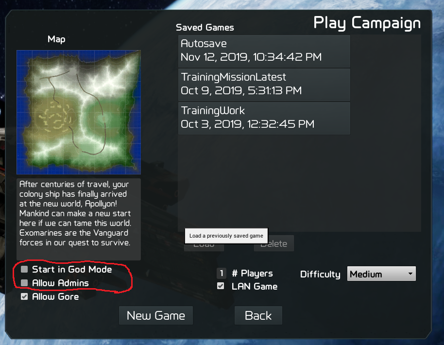

The Gamemaster role in GearStorm allows the player to take control of the game in almost every way. As
Gamemaster you can teleport, fly, build unlimited things, spawn anything, ban people, kick people, teleport
people to you, change the damage, range, and rate of fire of weapons, change the performance, damage, and armor
of vehicles, and change the world time, weather, day cycle, etc.
Becoming Gamemaster
Here are the ways to be a Gamemaster in a GearStorm game:
1. In the game.ini file, under the [/Script/ShooterGame.ServerSettings] section, set the "+ServerAdmin=" value
to the steam ID number of your admins. Add a new "+ServerAdmin=" value for each Gamemaster you want to add or
use the "*" value to let anyone be Gamemaster (ie: "+ServerAdmin=*")
2. When hosting the game or starting a campaign, check the "Allow Gamemasters" check
box and to start in
Gamemaster mode already, check the "Start in Gamemaster Mode" checkbox.

Gamemastering
To perform any Gamemaster function in GearStorm, you need to use the Gamemaster interface
accessed by pressing
"backspace" (default mapping)
Gamemaster Interface: